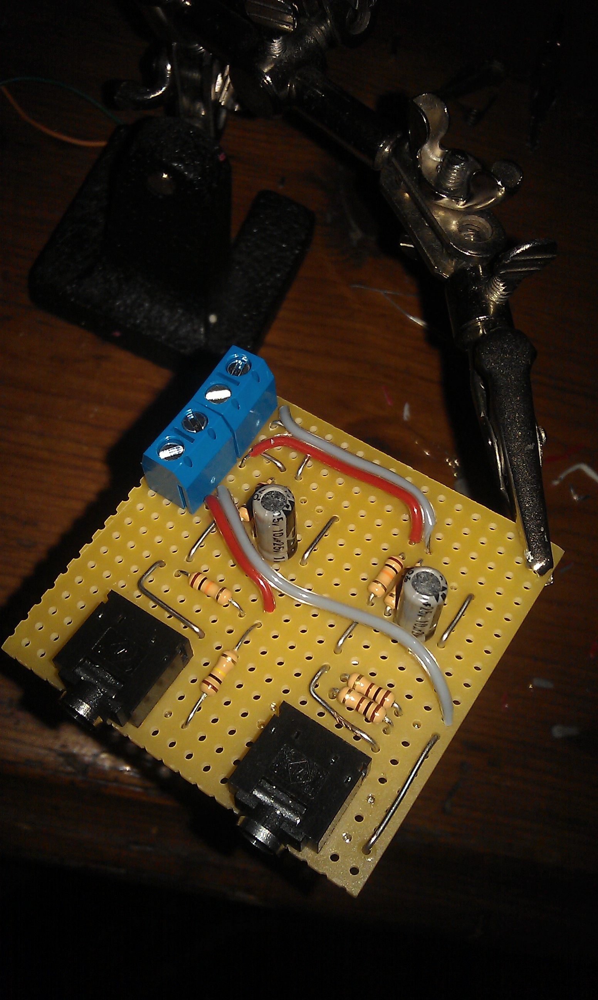

Hi there,
I'm trying to set up the Mains AC: non-invasive 3.0 with SCT-013-000. Using the calibration sketch from Eric Sandeen, I dont get any usefull readings from testing with a simple water heater (9A). The analog Input just reads 512, nothing changes when I switch the heater on and off.
I already tried different burden resistors (from 50-330000 Ohm) and checked the CT with an Ohmmeter, to test if maybe the cable is broken, but I gives me 100 Ohm, as I would expect from such a coil.
Is there any other way to test, if the CT is working correctly or something like a list of stupid mistakes that can happen while wireing the circuit?
Thank you,
Sebastian
Re: Testing CT function
You could test for continuity in your circuit, making sure all your connections are good. Are you using a breadboard or a soldering the circuit? Check the jack connection that the CT plugs into, it may be incorrect or not getting a solid connection. Is your CT only around the hot leg conductor of the water heater you are using to test or is it around all the wires (hot leg, neutral, and ground)? Make sure it is the correct analog input.
Hope this helps. Let us know if it starts working.
Re: Testing CT function
Yeah! It is working now!
You were right, the jack connection was not working properly. I had the circuit on a breadboard the jack input does not really fit the breadboard holes... Now I did a little soldering action and get nice current and voltage readings.

BUT the 'real power' is negative since i swiched from breadboard to soldered...
A line reads like:
-84.70 85.45 -0.99 231.37 0.37
'real power' 'apparent power' 'power factor' 'Vrms' 'Irms'
Not such a great issue, but I would like to know why it changed.
Thank you!
Sebastian
Re: Testing CT function
With regards to the negative real power, do you have a directional CT? Try flipping the CT around on the wire.
Re: Testing CT function
Directional CT? I thought it is is AC current, but I will try that.
Re: Testing CT function
"The analog Input just reads 512, nothing changes when I switch the heater on and off."
I have exactly the same problem, using SCT-013-030 in Italy. I'm not using a burden resistor, as it seems to be built-in (62 Ohms). I'll double check my connections, but I guess the CT is properly connected since I get a constant reading of 512 on analog PIN A1...
The multimeter reads a 38 ohm resistance across CT's terminals...Is this correct?
What could I be missing?
Thank you
Re: Testing CT function
As brian mentioned above are you clipping around all the wires? (live, neutral and ground) to work it needs to be clipped around either live or neutral. Otherwise the magnetic fields cancel out.
Re: Testing CT function
Thank you for reply, I feel so ignorant...
Sorry for my silly question
Re: Testing CT function
dont be, its an easy mistake